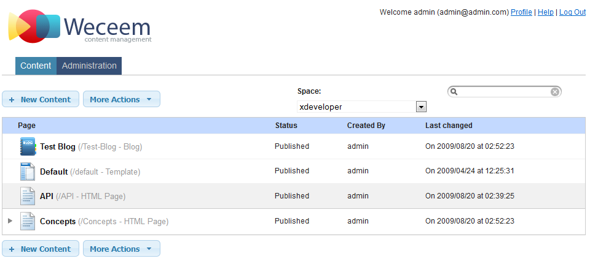
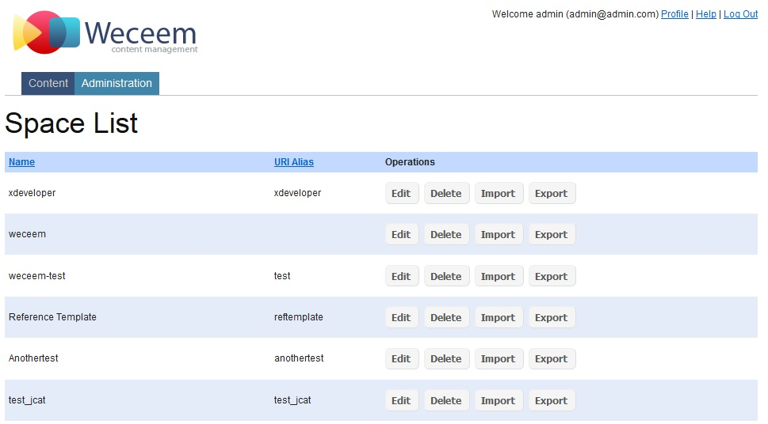
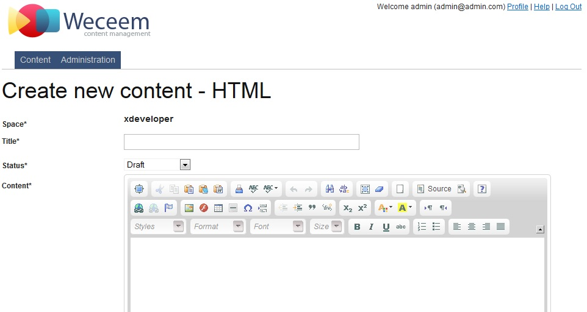
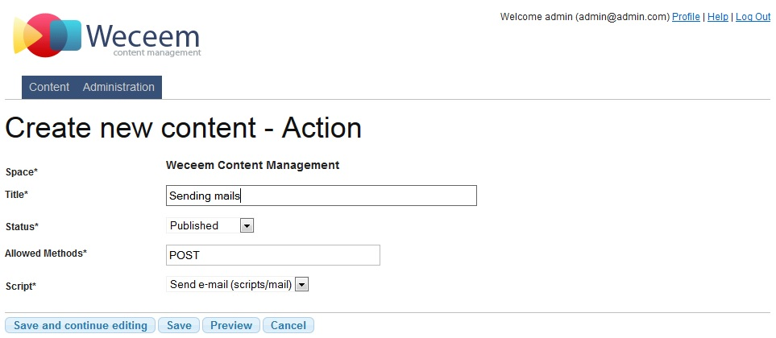
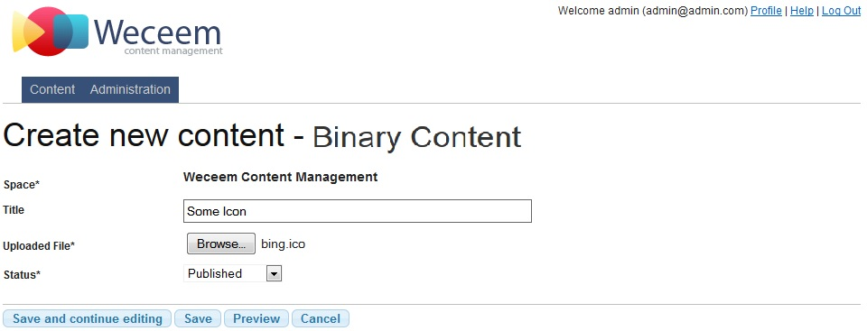
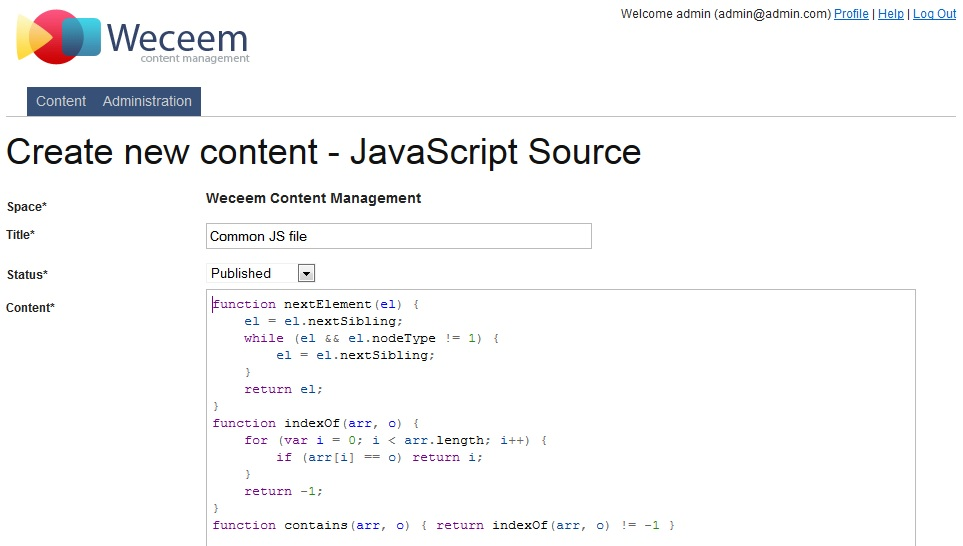
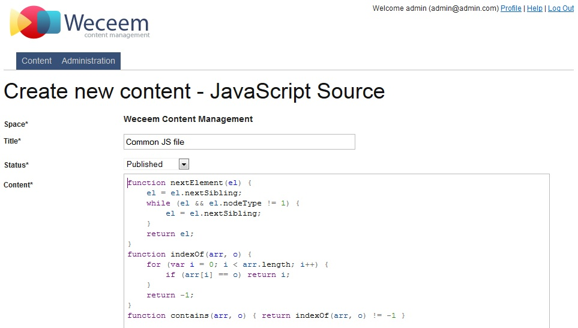
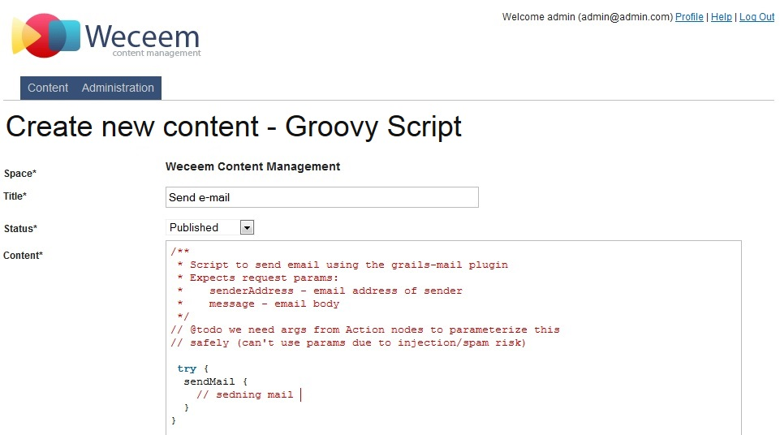
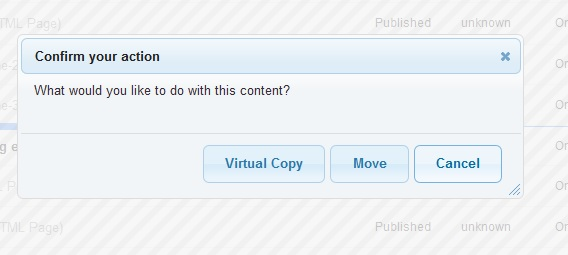
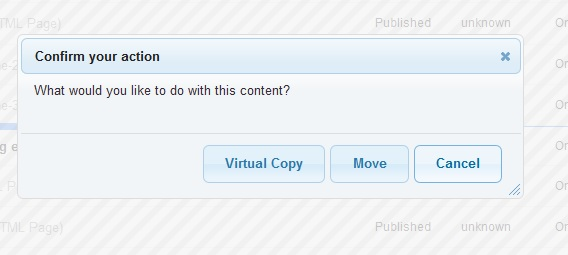

4 User Guide - Reference Documentation
Authors: Stephan Albers, Mark Palmer, July Antonicheva
Version: 1.3-SNAPSHOT
Table of Contents
4 User Guide
4.1 Administrative UI
Weceem contains administrative UI for users that have access to creating new content and managing existed sources. In your weceem.properties file or in Config.groovy file the user can customize URL that leads to admin UI. By default the mapping "wcm/admin" will be used.Admin UI consists of two tabs: "Content" and "Administration".Content tabAt the top of the Content tab there is a panel with action buttons and settings. Action buttons New Content and More Actions contain list of operations that can be done on stored contents. The setting list Space gives the user possibility to select Space for editing. As far as the user change Space in list, the contents from selected Space should be listed in content repository tree below.Administration tabThe tab contains several editors:- Spaces
- Synchronize files
- Plugins management
- Licenses
- Check links
- Users

4.2 Create Space
Space editor gives the user possibility to create new Spaces or edit/delete/import/export existed one.Each Space is determined by its name and alias URI, where alias URI is a prefix for your site (Space), that will be used in URL mappings when you try to review the ready site content.4.3 File Synchronization
Synchronizing a space with the server filesystem will create new content nodes for any directories and files that exist in the filesystem but are not currently in the content repository.You will be given the option to delete any content nodes that refer to server files or directories that no longer exist.4.4 Plugins
The feature you selected is not quite ready. Please view the Weceem.org roadmap for what is coming in the next release.4.5 Licenses
Weceem is 100% open source licensed. The Weceem application and plugin and Grails are Apache 2 licensed The jQuery and jQuery UI libraries are provided under the MIT license.4.6 Check Links
The feature you selected is not quite ready. Please view the Weceem.org roadmap for what is coming in the next release.4.7 CMS User management
The editor gives possibility to manage CMS user: enable user, give/change auhorities, update password and other user information such as First Name, Last Name, Email.
4.8 Create HTML pages
If the user needs to create HTML page, he needs to select row in the content repository tree by clicking on it. As the result the row is preselected by color. The row selection means that the content will be child to selected content. Then at the top of Content tab there is a button New Content that offers a list of available content types to be created. Select the type "HTML" and press "Create" button. The new content editor should be shown to the user4.9 Create Blog, Blog Entries and Comments
There is a simple default support for blogs in Weceem. For preparing new blog, the user needs to select row in the content repository tree by clicking on it. As the result the row is preselected by color. The row selection means that the content will be child to selected content. Then at the top of Content tab there is a button New Content that offers a list of available content types to be created. Select the type "Blog" and press "Create" button. The new blog editor should be shown to the user If the Blog is created, then it is possible to create Blog Entries. The user should select "Blog row" as a parent and
press New Content button to select Blog entry content type. The editor contains CKEditor for entering content.
If the Blog is created, then it is possible to create Blog Entries. The user should select "Blog row" as a parent and
press New Content button to select Blog entry content type. The editor contains CKEditor for entering content. Also it is possible to create or manage existed Comments. If you put a submission form for your Blog Entry page then
the users will push comments to your through your site. Also you can create new Comment from "Content" tab by pressing
button "New Content" and selecting Comment content type.
Also it is possible to create or manage existed Comments. If you put a submission form for your Blog Entry page then
the users will push comments to your through your site. Also you can create new Comment from "Content" tab by pressing
button "New Content" and selecting Comment content type.
4.10 Server Directory and Server File
If the user needs to add some files, f.e. images then it is possible to create a "Server Directory" on a file system and put your uploaded files as "Server File" there. Although there are special content types for CSS anf JS files such as "CSS Stylesheet" and "JavaScript Source", but they are restricted to be no longer then 500000 symbols. In case if the user wants to use the biggest CSS, JS libraries or images, the ServerFile is the type that is needed to be used.Firstly create Server Directory - the folder on the file system will be created, then put your uploaded files as Server Files to this directory.

4.11 Templates and Widgets
If the user needs to prepare template, he needs to select row in the content repository tree by clicking on it. As the result the row is preselected by color. The row selection means that the content will be child to selected content. Then at the top of Content tab there is a button New Content that offers a list of available content types to be created. Select the type "Template" and press "Create" button. The new content editor should be shown to the user. Usually the template is a GSP page that uses Weceem tags for rendering necessary content. Check Tags section for more details. Also it is possible to create widgets, by selecting content type "Widget" to prepare widgets for templates. Usually
template is consists from widgets as from blocks. It helps template to be more flexible and customizable.
Also it is possible to create widgets, by selecting content type "Widget" to prepare widgets for templates. Usually
template is consists from widgets as from blocks. It helps template to be more flexible and customizable.
4.12 Create Action
It is possible to create content Action that is determined with Groovy Script that should be executed. For example, sending mails of checking links on the page. To create new Action is possible using button "New Content" at the top of repository tree and selecting content type Action in the available content types. The simple editor is available for creating user Actions.4.13 Create Binary Content
The content type Binary Content represents files, that are stored in the data base using base64 encoding. Don't use it for large content. It is intended for logos etc. To create such content, please check that at the top of Content tab there is a button New Content that offers a list of available content types to be created. Select the type "Binary Content" and press "Create" button. The new editor similar to Server File editor should be shown to the user4.14 Create CSS Stylesheets and Javascript Sources
It is possible to prepare CSS Stylesheets and JavaScript Sources as a content nodes. At the top of Content tab there is a button New Content that offers a list of available content types to be created. Select the type "CSS Stylesheets" or "JavaScript Sources" and press "Create" button. The simple content editor should be shown to the user. 

4.15 Create External Link
The user has possibility to create content with the type "External Link". This content type is representing a link to an external URL . To create new External Link, check at the top of Content tab there is a button New Content that offers a list of available content types to be created. Select the type "External Link" and press "Create" button. The special content editor should be shown to the user.
4.16 Create Groovy Script
It is possible to create Groovy Scripts, that can be used for creating new content Actions. For that aim at the top of Content tab there is a button New Content that offers a list of available content types to be created. Select the type "Groovy Script" and press "Create" button. The special content editor should be shown to the user.4.17 Create Folder
It is possible to create Folders in content repository tree. The Folders usually used to organize content by types or logically. For example, the user can create Folders "CSS" and "JavaScript" and put CSS Stylesheets and JavaScript sources in them respectively.
4.18 Create Wiki page
It is possible to create Wiki page content by using button "New Content" at the top of repository tree and selecting content type Wiki Page in the available content types. The editor is available for creating new content.
4.19 Create Virtual Content
There is a possibility to create virtual content for any existed content in the content repository tree. For that aim, please check button "New Content" at the top of repository tree and select content type Virtual Content in the available content types. Each Virtual Content is determined by its "target" - the content node from repository tree.
4.20 Statuses, Publishing and Unpublishing by date
The statuses are very important part in content management. According to status of a content it can be shown, hidden, publish or unpublish by specified date.The following Statuses are provided:- Draft
- Unmoderated
- Reviewed
- Approved
- Published
- Archived
4.21 Search in Weceem
The full text search is available in Weceem by default. It is provided by using Searchable plugin , that is built on Compass (http://www.compass-project.org/) and Lucene (http://lucene.apache.org/).The component provides search for specified content types. Please check Tags section for more information.<wcm:search types="org.weceem.html.WcmHTMLContent,org.weceem.blog.WcmBlogEntry,org.weceem.content.WcmComment"/>4.22 Operations with content repository tree
There is a list of operations that can be done with content repository tree. The button with dropping menu items is situated above the content repository tree, it is called "More Actions". The following operations are available:- Preview selected content
- Delete content
- Move to Space
- Duplicate...
 Delete content gives the user possibility to delete selected content. If the content contains children, the error
message will be displayed and content won't be deleted.
Delete content gives the user possibility to delete selected content. If the content contains children, the error
message will be displayed and content won't be deleted. Move to Space operation should move content from one Space to another one, but currently not implemented yet.Duplicate should copy the selected content to the other holder, parent content or even in another Space, but
currently not implemented yet.Also there are several operations that can be done on content repository tree, f.e. the user can drag a content and
drop it as a child to another content. It is possible such way to move or copy the content to the another location.
Move to Space operation should move content from one Space to another one, but currently not implemented yet.Duplicate should copy the selected content to the other holder, parent content or even in another Space, but
currently not implemented yet.Also there are several operations that can be done on content repository tree, f.e. the user can drag a content and
drop it as a child to another content. It is possible such way to move or copy the content to the another location.